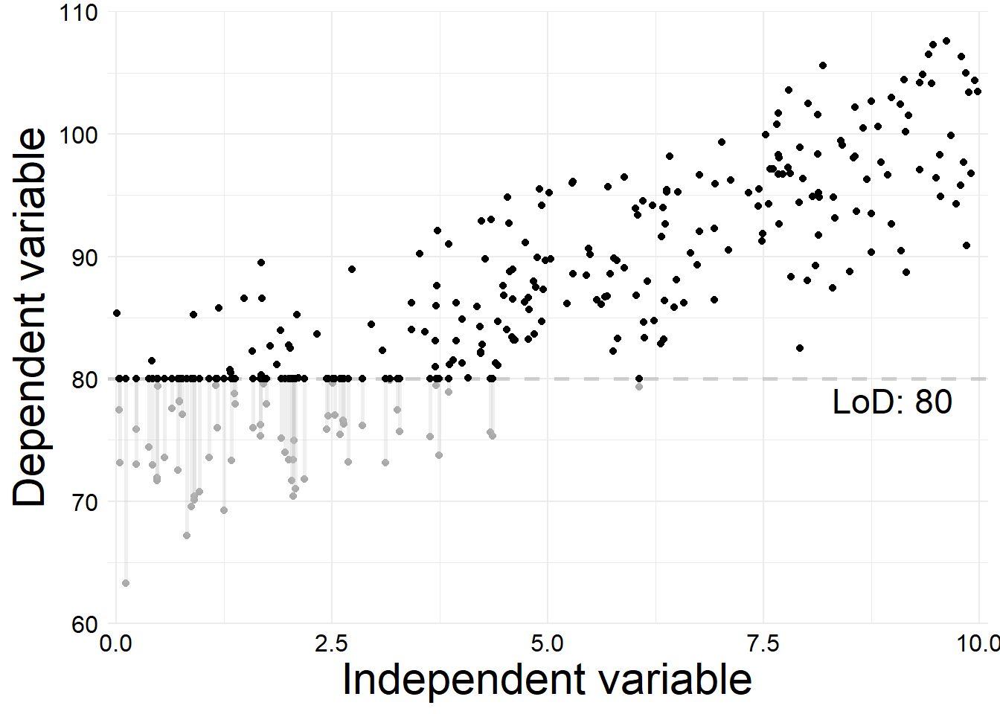
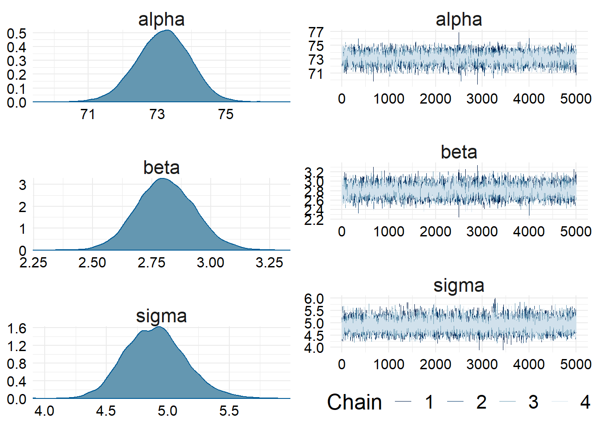
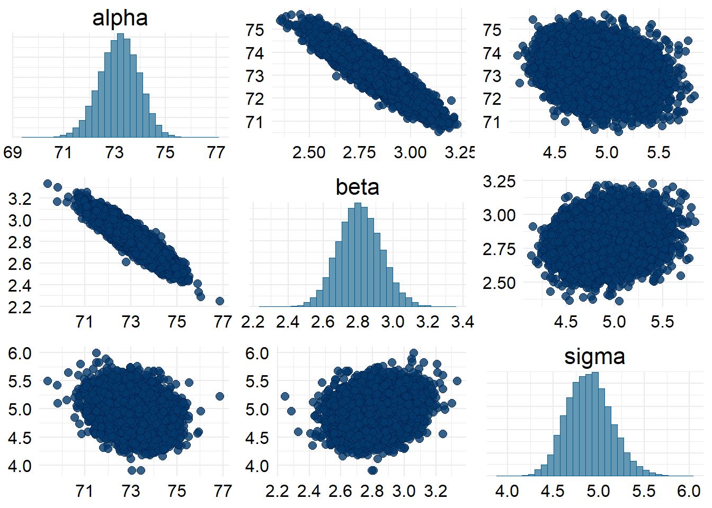
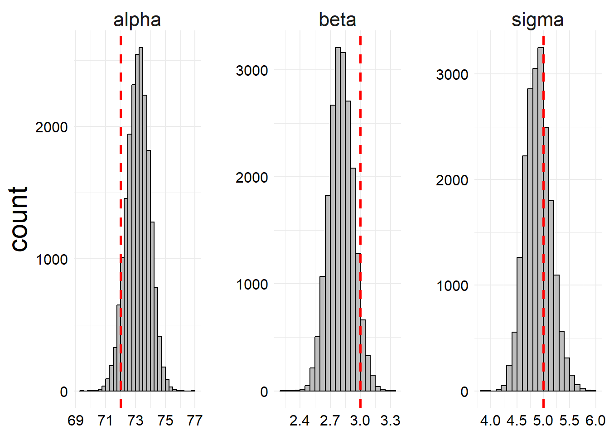
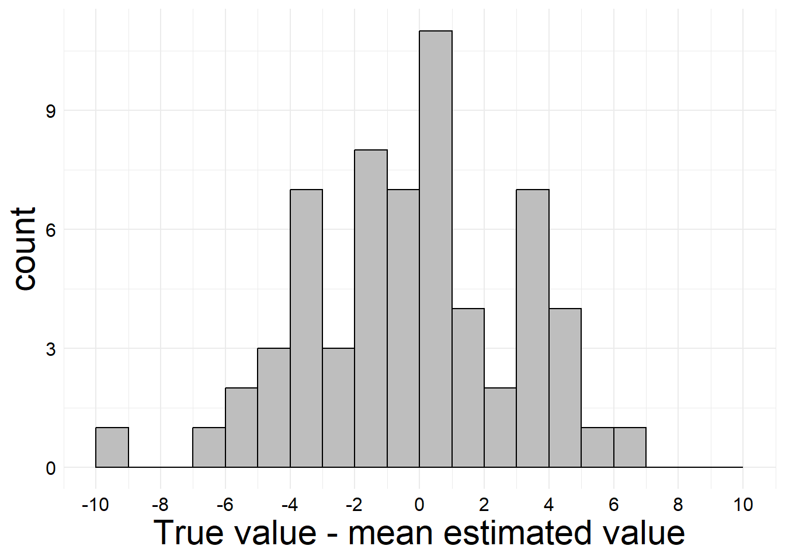

3 Example Model 2: One censored outcome
For the second example model, we’ll work on a case where there is one predictor (the models generalize easily to the multivariable case) and the outcome is censored.
3.1 Lower limit of detection
For the first example, we’ll work with an outcome that has a lower limit of detection. First we need to simulate the data, which means we need to write out a generative model for the data. We’ll randomly sample x for the purposes of generating data, but for the purposes of our model we’ll assume x_i is a completely observed covariate and thus is known and does not need a random component in the model.
\[ \begin{align*} y_i &= \begin{cases} \mathrm{DL}, & y^*_i \leq \mathrm{DL} \\ y^*_i, & y^*_i > \mathrm{DL} \end{cases} \\ y^*_i &\sim \mathrm{Normal}\left(\mu_i, \sigma^2\right) \\ \mu_i &= \alpha + \beta \cdot x_i \\ i &= 1, 2, \ldots, n \end{align*} \] Here, DL is the Detection Limit, aka the lower limit of detection for the variable. Of course in our generative model, we have set \(\alpha\), \(\beta\), and \(\sigma^2\) to be fixed population parameters, but for Bayesian inference we would need to assign suitable priors. Let’s set the values and simulate our data. The parameters I set for this example are as follows.
| Parameter | Value | Meaning |
|---|---|---|
| \(n\) | 271 | Sample size |
| \(\alpha\) | 72 | Regression intercept |
| \(\beta\) | 3 | Regression slope |
| \(\sigma\) | 5 | Standard deviation of outcome |
| \(\mathrm{DL}\) | 80 | Lower limit of detection |
The \(x\)-values were drawn from a uniform distribution on \((0, 10)\). Since we know the true population parameters for our simulation, we can plot the data to see the effect of the censoring process on our observed \(y\) values.
In this plot, the black data points show our observed data. For those observations where the \(y\) value was below the limit of detection and thus censored, the gray points show the true latent values, which we could have observed with a perfect measurement process. The gray line segments connect each latent measurement to its corresponding observed measurement.
Approximatly \(22.88\%\) of data points were below the limit of detection and were therefore censored. Of course in real life, we would only observe the black points (observed values), and the gray points would be unobservable to us. But for the purposes of understanding how to analyze censored data, visualizing how different the observed and latent datasets are is quite valuable and informative. Since the datasets look so different, we should not be surprised that our regression estimates would be incorrect if we treated all of the censored values as the same constant value, or ignored them entirely!
So, if our standard linear regression model that we know and love (even the Bayesian version) would give us incorrect estimates using any of these naive methods, how then are we to proceed? According to the Stan manual (Stan Development Team 2023, chap. 4), there are two main ways of handling the censoring in the outcome in our model. The first of these methods relies on imputation and the second on integration of the likelihood function and manual updating of the target likelihood in Stan. The imputation method is conceptually easier and less mathematically daunting, so we begin our treatment there.
3.1.1 Imputation-type method
The first method for dealing with censored data treats the censored values as missing values where the latent value is constrained to fall within a specific range. For a normally distributed outcome, all values below the lower limit of detection are constrained to fall within \((-\infty, \mathrm{DL})\).
READ THAT PART OF RETHINKING AND EXPLAIN HOW MISSING DATA WORKS HERE!!!
To implement such a model in Stan, we need to pass in the number of observed and the number of censored values and the observed y-values in Stan. We then declare the censored \(y\)-values as a parameter in the Stan code, meaning they will be sampled from their constrained distribution during the fitting process, whereas the observed \(y\) values will be used to update the parameter estimates.
First, let’s look at the Stan code for this model.
SHOW THE STAN CODE HERE.
Since the data need to be in kind of a clunky format to use this method, we first need to do some wrangle and get the data in the correct format for Stan.
dat_2a <- list()
with(
sim_data, {
dat_cens <- subset(sim_data, cens)
dat_obs <- subset(sim_data, !cens)
dat_2a$N_cens <<- nrow(dat_cens)
dat_2a$N_obs <<- nrow(dat_obs)
dat_2a$y_obs <<- dat_obs$y
dat_2a$x_obs <<- dat_obs$x
dat_2a$y_cens <<- dat_cens$y
dat_2a$x_cens <<- dat_cens$x
dat_2a$DL <<- as.integer(sim_parms$DL)
}
)
str(dat_2a)List of 7
$ N_cens: int 62
$ N_obs : int 209
$ y_obs : num [1:209] 92.6 104.2 86.2 88.7 94.9 ...
$ x_obs : num [1:209] 8.98 9.31 3.42 8.5 8.14 ...
$ y_cens: num [1:62] 80 80 80 80 80 80 80 80 80 80 ...
$ x_cens: num [1:62] 0.227 0.555 1.168 2.853 2.434 ...
$ DL : int 80Now we can compile the Stan program (via cmdstanr as usual).
mod_2a <- cmdstanr::cmdstan_model(here::here("Ex2a.stan"), compile = FALSE)
mod_2a$compile(pedantic = TRUE, force_recompile = TRUE)Warning in 'C:/Users/Zane/AppData/Local/Temp/Rtmp02Gefc/model-f3818262ea.stan', line 56, column 21: Argument
0.01 suggests there may be parameters that are not unit scale; consider
rescaling with a multiplier (see manual section 22.12).
Warning in 'C:/Users/Zane/AppData/Local/Temp/Rtmp02Gefc/model-f3818262ea.stan', line 55, column 18: Argument
100 suggests there may be parameters that are not unit scale; consider
rescaling with a multiplier (see manual section 22.12).
Warning in 'C:/Users/Zane/AppData/Local/Temp/Rtmp02Gefc/model-f3818262ea.stan', line 54, column 19: Argument
100 suggests there may be parameters that are not unit scale; consider
rescaling with a multiplier (see manual section 22.12).
Warning: The parameter y_cens has no priors. This means either no prior is
provided, or the prior(s) depend on data variables. In the later case,
this may be a false positive.In file included from stan/lib/stan_math/stan/math/prim/prob/von_mises_lccdf.hpp:5,
from stan/lib/stan_math/stan/math/prim/prob/von_mises_ccdf_log.hpp:4,
from stan/lib/stan_math/stan/math/prim/prob.hpp:356,
from stan/lib/stan_math/stan/math/prim.hpp:16,
from stan/lib/stan_math/stan/math/rev.hpp:14,
from stan/lib/stan_math/stan/math.hpp:19,
from stan/src/stan/model/model_header.hpp:4,
from C:/Users/Zane/AppData/Local/Temp/Rtmp02Gefc/model-f3818262ea.hpp:2:
stan/lib/stan_math/stan/math/prim/prob/von_mises_cdf.hpp: In function 'stan::return_type_t<T_x, T_sigma, T_l> stan::math::von_mises_cdf(const T_x&, const T_mu&, const T_k&)':
stan/lib/stan_math/stan/math/prim/prob/von_mises_cdf.hpp:194: note: '-Wmisleading-indentation' is disabled from this point onwards, since column-tracking was disabled due to the size of the code/headers
194 | if (cdf_n < 0.0)
| stan/lib/stan_math/stan/math/prim/prob/von_mises_cdf.hpp:194: note: adding '-flarge-source-files' will allow for more column-tracking support, at the expense of compilation time and memoryAnd since the program compiles correctly, we can use Stan’s sampling algorithm to generate samples from the posterior distribution. We’ll run 4 chains in parallel with 500 warmup iterations and 5000 sampling iterations per chains, with all of the other control parameters (e.g. maximum treedepth and adaptive delta) left at the cmdstan defaults. This many samples is overkill for this problem, but it is also quite fast and thus we can do many samples just to be safe.
fit_2a <- mod_2a$sample(
dat_2a, seed = 100, parallel_chains = 4,
iter_warmup = 500,
iter_sampling = 5000
)Running MCMC with 4 parallel chains...
Chain 1 Iteration: 1 / 5500 [ 0%] (Warmup)
Chain 2 Iteration: 1 / 5500 [ 0%] (Warmup)
Chain 3 Iteration: 1 / 5500 [ 0%] (Warmup)
Chain 4 Iteration: 1 / 5500 [ 0%] (Warmup)
Chain 1 Iteration: 100 / 5500 [ 1%] (Warmup)
Chain 1 Iteration: 200 / 5500 [ 3%] (Warmup)
Chain 1 Iteration: 300 / 5500 [ 5%] (Warmup)
Chain 1 Iteration: 400 / 5500 [ 7%] (Warmup)
Chain 1 Iteration: 500 / 5500 [ 9%] (Warmup)
Chain 1 Iteration: 501 / 5500 [ 9%] (Sampling)
Chain 2 Iteration: 100 / 5500 [ 1%] (Warmup)
Chain 2 Iteration: 200 / 5500 [ 3%] (Warmup)
Chain 2 Iteration: 300 / 5500 [ 5%] (Warmup)
Chain 3 Iteration: 100 / 5500 [ 1%] (Warmup)
Chain 3 Iteration: 200 / 5500 [ 3%] (Warmup)
Chain 3 Iteration: 300 / 5500 [ 5%] (Warmup)
Chain 4 Iteration: 100 / 5500 [ 1%] (Warmup)
Chain 4 Iteration: 200 / 5500 [ 3%] (Warmup)
Chain 4 Iteration: 300 / 5500 [ 5%] (Warmup)
Chain 4 Iteration: 400 / 5500 [ 7%] (Warmup)
Chain 1 Iteration: 600 / 5500 [ 10%] (Sampling)
Chain 1 Iteration: 700 / 5500 [ 12%] (Sampling)
Chain 2 Iteration: 400 / 5500 [ 7%] (Warmup)
Chain 2 Iteration: 500 / 5500 [ 9%] (Warmup)
Chain 2 Iteration: 501 / 5500 [ 9%] (Sampling)
Chain 3 Iteration: 400 / 5500 [ 7%] (Warmup)
Chain 3 Iteration: 500 / 5500 [ 9%] (Warmup)
Chain 3 Iteration: 501 / 5500 [ 9%] (Sampling)
Chain 3 Iteration: 600 / 5500 [ 10%] (Sampling)
Chain 4 Iteration: 500 / 5500 [ 9%] (Warmup)
Chain 4 Iteration: 501 / 5500 [ 9%] (Sampling)
Chain 4 Iteration: 600 / 5500 [ 10%] (Sampling)
Chain 4 Iteration: 700 / 5500 [ 12%] (Sampling)
Chain 1 Iteration: 800 / 5500 [ 14%] (Sampling)
Chain 1 Iteration: 900 / 5500 [ 16%] (Sampling)
Chain 2 Iteration: 600 / 5500 [ 10%] (Sampling)
Chain 2 Iteration: 700 / 5500 [ 12%] (Sampling)
Chain 3 Iteration: 700 / 5500 [ 12%] (Sampling)
Chain 3 Iteration: 800 / 5500 [ 14%] (Sampling)
Chain 4 Iteration: 800 / 5500 [ 14%] (Sampling)
Chain 4 Iteration: 900 / 5500 [ 16%] (Sampling)
Chain 1 Iteration: 1000 / 5500 [ 18%] (Sampling)
Chain 1 Iteration: 1100 / 5500 [ 20%] (Sampling)
Chain 2 Iteration: 800 / 5500 [ 14%] (Sampling)
Chain 2 Iteration: 900 / 5500 [ 16%] (Sampling)
Chain 3 Iteration: 900 / 5500 [ 16%] (Sampling)
Chain 3 Iteration: 1000 / 5500 [ 18%] (Sampling)
Chain 4 Iteration: 1000 / 5500 [ 18%] (Sampling)
Chain 4 Iteration: 1100 / 5500 [ 20%] (Sampling)
Chain 4 Iteration: 1200 / 5500 [ 21%] (Sampling)
Chain 1 Iteration: 1200 / 5500 [ 21%] (Sampling)
Chain 1 Iteration: 1300 / 5500 [ 23%] (Sampling)
Chain 2 Iteration: 1000 / 5500 [ 18%] (Sampling)
Chain 2 Iteration: 1100 / 5500 [ 20%] (Sampling)
Chain 3 Iteration: 1100 / 5500 [ 20%] (Sampling)
Chain 3 Iteration: 1200 / 5500 [ 21%] (Sampling)
Chain 4 Iteration: 1300 / 5500 [ 23%] (Sampling)
Chain 4 Iteration: 1400 / 5500 [ 25%] (Sampling)
Chain 4 Iteration: 1500 / 5500 [ 27%] (Sampling)
Chain 1 Iteration: 1400 / 5500 [ 25%] (Sampling)
Chain 1 Iteration: 1500 / 5500 [ 27%] (Sampling)
Chain 2 Iteration: 1200 / 5500 [ 21%] (Sampling)
Chain 2 Iteration: 1300 / 5500 [ 23%] (Sampling)
Chain 3 Iteration: 1300 / 5500 [ 23%] (Sampling)
Chain 3 Iteration: 1400 / 5500 [ 25%] (Sampling)
Chain 4 Iteration: 1600 / 5500 [ 29%] (Sampling)
Chain 4 Iteration: 1700 / 5500 [ 30%] (Sampling)
Chain 4 Iteration: 1800 / 5500 [ 32%] (Sampling)
Chain 1 Iteration: 1600 / 5500 [ 29%] (Sampling)
Chain 1 Iteration: 1700 / 5500 [ 30%] (Sampling)
Chain 2 Iteration: 1400 / 5500 [ 25%] (Sampling)
Chain 3 Iteration: 1500 / 5500 [ 27%] (Sampling)
Chain 3 Iteration: 1600 / 5500 [ 29%] (Sampling)
Chain 3 Iteration: 1700 / 5500 [ 30%] (Sampling)
Chain 4 Iteration: 1900 / 5500 [ 34%] (Sampling)
Chain 4 Iteration: 2000 / 5500 [ 36%] (Sampling)
Chain 4 Iteration: 2100 / 5500 [ 38%] (Sampling)
Chain 1 Iteration: 1800 / 5500 [ 32%] (Sampling)
Chain 1 Iteration: 1900 / 5500 [ 34%] (Sampling)
Chain 1 Iteration: 2000 / 5500 [ 36%] (Sampling)
Chain 2 Iteration: 1500 / 5500 [ 27%] (Sampling)
Chain 2 Iteration: 1600 / 5500 [ 29%] (Sampling)
Chain 3 Iteration: 1800 / 5500 [ 32%] (Sampling)
Chain 3 Iteration: 1900 / 5500 [ 34%] (Sampling)
Chain 4 Iteration: 2200 / 5500 [ 40%] (Sampling)
Chain 4 Iteration: 2300 / 5500 [ 41%] (Sampling)
Chain 1 Iteration: 2100 / 5500 [ 38%] (Sampling)
Chain 2 Iteration: 1700 / 5500 [ 30%] (Sampling)
Chain 2 Iteration: 1800 / 5500 [ 32%] (Sampling)
Chain 3 Iteration: 2000 / 5500 [ 36%] (Sampling)
Chain 3 Iteration: 2100 / 5500 [ 38%] (Sampling)
Chain 4 Iteration: 2400 / 5500 [ 43%] (Sampling)
Chain 4 Iteration: 2500 / 5500 [ 45%] (Sampling)
Chain 4 Iteration: 2600 / 5500 [ 47%] (Sampling)
Chain 1 Iteration: 2200 / 5500 [ 40%] (Sampling)
Chain 1 Iteration: 2300 / 5500 [ 41%] (Sampling)
Chain 2 Iteration: 1900 / 5500 [ 34%] (Sampling)
Chain 3 Iteration: 2200 / 5500 [ 40%] (Sampling)
Chain 3 Iteration: 2300 / 5500 [ 41%] (Sampling)
Chain 4 Iteration: 2700 / 5500 [ 49%] (Sampling)
Chain 4 Iteration: 2800 / 5500 [ 50%] (Sampling)
Chain 1 Iteration: 2400 / 5500 [ 43%] (Sampling)
Chain 1 Iteration: 2500 / 5500 [ 45%] (Sampling)
Chain 2 Iteration: 2000 / 5500 [ 36%] (Sampling)
Chain 2 Iteration: 2100 / 5500 [ 38%] (Sampling)
Chain 3 Iteration: 2400 / 5500 [ 43%] (Sampling)
Chain 3 Iteration: 2500 / 5500 [ 45%] (Sampling)
Chain 4 Iteration: 2900 / 5500 [ 52%] (Sampling)
Chain 4 Iteration: 3000 / 5500 [ 54%] (Sampling)
Chain 4 Iteration: 3100 / 5500 [ 56%] (Sampling)
Chain 1 Iteration: 2600 / 5500 [ 47%] (Sampling)
Chain 1 Iteration: 2700 / 5500 [ 49%] (Sampling)
Chain 2 Iteration: 2200 / 5500 [ 40%] (Sampling)
Chain 2 Iteration: 2300 / 5500 [ 41%] (Sampling)
Chain 3 Iteration: 2600 / 5500 [ 47%] (Sampling)
Chain 3 Iteration: 2700 / 5500 [ 49%] (Sampling)
Chain 4 Iteration: 3200 / 5500 [ 58%] (Sampling)
Chain 4 Iteration: 3300 / 5500 [ 60%] (Sampling)
Chain 4 Iteration: 3400 / 5500 [ 61%] (Sampling)
Chain 1 Iteration: 2800 / 5500 [ 50%] (Sampling)
Chain 1 Iteration: 2900 / 5500 [ 52%] (Sampling)
Chain 1 Iteration: 3000 / 5500 [ 54%] (Sampling)
Chain 2 Iteration: 2400 / 5500 [ 43%] (Sampling)
Chain 2 Iteration: 2500 / 5500 [ 45%] (Sampling)
Chain 3 Iteration: 2800 / 5500 [ 50%] (Sampling)
Chain 3 Iteration: 2900 / 5500 [ 52%] (Sampling)
Chain 4 Iteration: 3500 / 5500 [ 63%] (Sampling)
Chain 4 Iteration: 3600 / 5500 [ 65%] (Sampling)
Chain 4 Iteration: 3700 / 5500 [ 67%] (Sampling)
Chain 1 Iteration: 3100 / 5500 [ 56%] (Sampling)
Chain 1 Iteration: 3200 / 5500 [ 58%] (Sampling)
Chain 2 Iteration: 2600 / 5500 [ 47%] (Sampling)
Chain 3 Iteration: 3000 / 5500 [ 54%] (Sampling)
Chain 3 Iteration: 3100 / 5500 [ 56%] (Sampling)
Chain 4 Iteration: 3800 / 5500 [ 69%] (Sampling)
Chain 4 Iteration: 3900 / 5500 [ 70%] (Sampling)
Chain 1 Iteration: 3300 / 5500 [ 60%] (Sampling)
Chain 1 Iteration: 3400 / 5500 [ 61%] (Sampling)
Chain 2 Iteration: 2700 / 5500 [ 49%] (Sampling)
Chain 2 Iteration: 2800 / 5500 [ 50%] (Sampling)
Chain 3 Iteration: 3200 / 5500 [ 58%] (Sampling)
Chain 3 Iteration: 3300 / 5500 [ 60%] (Sampling)
Chain 4 Iteration: 4000 / 5500 [ 72%] (Sampling)
Chain 4 Iteration: 4100 / 5500 [ 74%] (Sampling)
Chain 4 Iteration: 4200 / 5500 [ 76%] (Sampling)
Chain 1 Iteration: 3500 / 5500 [ 63%] (Sampling)
Chain 1 Iteration: 3600 / 5500 [ 65%] (Sampling)
Chain 2 Iteration: 2900 / 5500 [ 52%] (Sampling)
Chain 2 Iteration: 3000 / 5500 [ 54%] (Sampling)
Chain 3 Iteration: 3400 / 5500 [ 61%] (Sampling)
Chain 3 Iteration: 3500 / 5500 [ 63%] (Sampling)
Chain 3 Iteration: 3600 / 5500 [ 65%] (Sampling)
Chain 4 Iteration: 4300 / 5500 [ 78%] (Sampling)
Chain 4 Iteration: 4400 / 5500 [ 80%] (Sampling)
Chain 4 Iteration: 4500 / 5500 [ 81%] (Sampling)
Chain 1 Iteration: 3700 / 5500 [ 67%] (Sampling)
Chain 1 Iteration: 3800 / 5500 [ 69%] (Sampling)
Chain 2 Iteration: 3100 / 5500 [ 56%] (Sampling)
Chain 2 Iteration: 3200 / 5500 [ 58%] (Sampling)
Chain 3 Iteration: 3700 / 5500 [ 67%] (Sampling)
Chain 3 Iteration: 3800 / 5500 [ 69%] (Sampling)
Chain 4 Iteration: 4600 / 5500 [ 83%] (Sampling)
Chain 4 Iteration: 4700 / 5500 [ 85%] (Sampling)
Chain 4 Iteration: 4800 / 5500 [ 87%] (Sampling)
Chain 1 Iteration: 3900 / 5500 [ 70%] (Sampling)
Chain 1 Iteration: 4000 / 5500 [ 72%] (Sampling)
Chain 2 Iteration: 3300 / 5500 [ 60%] (Sampling)
Chain 3 Iteration: 3900 / 5500 [ 70%] (Sampling)
Chain 3 Iteration: 4000 / 5500 [ 72%] (Sampling)
Chain 4 Iteration: 4900 / 5500 [ 89%] (Sampling)
Chain 4 Iteration: 5000 / 5500 [ 90%] (Sampling)
Chain 4 Iteration: 5100 / 5500 [ 92%] (Sampling)
Chain 1 Iteration: 4100 / 5500 [ 74%] (Sampling)
Chain 1 Iteration: 4200 / 5500 [ 76%] (Sampling)
Chain 2 Iteration: 3400 / 5500 [ 61%] (Sampling)
Chain 2 Iteration: 3500 / 5500 [ 63%] (Sampling)
Chain 3 Iteration: 4100 / 5500 [ 74%] (Sampling)
Chain 3 Iteration: 4200 / 5500 [ 76%] (Sampling)
Chain 4 Iteration: 5200 / 5500 [ 94%] (Sampling)
Chain 4 Iteration: 5300 / 5500 [ 96%] (Sampling)
Chain 1 Iteration: 4300 / 5500 [ 78%] (Sampling)
Chain 1 Iteration: 4400 / 5500 [ 80%] (Sampling)
Chain 2 Iteration: 3600 / 5500 [ 65%] (Sampling)
Chain 2 Iteration: 3700 / 5500 [ 67%] (Sampling)
Chain 3 Iteration: 4300 / 5500 [ 78%] (Sampling)
Chain 3 Iteration: 4400 / 5500 [ 80%] (Sampling)
Chain 3 Iteration: 4500 / 5500 [ 81%] (Sampling)
Chain 4 Iteration: 5400 / 5500 [ 98%] (Sampling)
Chain 4 Iteration: 5500 / 5500 [100%] (Sampling)
Chain 4 finished in 2.4 seconds.
Chain 1 Iteration: 4500 / 5500 [ 81%] (Sampling)
Chain 1 Iteration: 4600 / 5500 [ 83%] (Sampling)
Chain 2 Iteration: 3800 / 5500 [ 69%] (Sampling)
Chain 2 Iteration: 3900 / 5500 [ 70%] (Sampling)
Chain 3 Iteration: 4600 / 5500 [ 83%] (Sampling)
Chain 3 Iteration: 4700 / 5500 [ 85%] (Sampling)
Chain 1 Iteration: 4700 / 5500 [ 85%] (Sampling)
Chain 1 Iteration: 4800 / 5500 [ 87%] (Sampling)
Chain 2 Iteration: 4000 / 5500 [ 72%] (Sampling)
Chain 2 Iteration: 4100 / 5500 [ 74%] (Sampling)
Chain 3 Iteration: 4800 / 5500 [ 87%] (Sampling)
Chain 3 Iteration: 4900 / 5500 [ 89%] (Sampling)
Chain 1 Iteration: 4900 / 5500 [ 89%] (Sampling)
Chain 1 Iteration: 5000 / 5500 [ 90%] (Sampling)
Chain 1 Iteration: 5100 / 5500 [ 92%] (Sampling)
Chain 2 Iteration: 4200 / 5500 [ 76%] (Sampling)
Chain 3 Iteration: 5000 / 5500 [ 90%] (Sampling)
Chain 3 Iteration: 5100 / 5500 [ 92%] (Sampling)
Chain 1 Iteration: 5200 / 5500 [ 94%] (Sampling)
Chain 1 Iteration: 5300 / 5500 [ 96%] (Sampling)
Chain 2 Iteration: 4300 / 5500 [ 78%] (Sampling)
Chain 2 Iteration: 4400 / 5500 [ 80%] (Sampling)
Chain 3 Iteration: 5200 / 5500 [ 94%] (Sampling)
Chain 3 Iteration: 5300 / 5500 [ 96%] (Sampling)
Chain 1 Iteration: 5400 / 5500 [ 98%] (Sampling)
Chain 1 Iteration: 5500 / 5500 [100%] (Sampling)
Chain 2 Iteration: 4500 / 5500 [ 81%] (Sampling)
Chain 2 Iteration: 4600 / 5500 [ 83%] (Sampling)
Chain 3 Iteration: 5400 / 5500 [ 98%] (Sampling)
Chain 3 Iteration: 5500 / 5500 [100%] (Sampling)
Chain 1 finished in 3.1 seconds.
Chain 3 finished in 3.0 seconds.
Chain 2 Iteration: 4700 / 5500 [ 85%] (Sampling)
Chain 2 Iteration: 4800 / 5500 [ 87%] (Sampling)
Chain 2 Iteration: 4900 / 5500 [ 89%] (Sampling)
Chain 2 Iteration: 5000 / 5500 [ 90%] (Sampling)
Chain 2 Iteration: 5100 / 5500 [ 92%] (Sampling)
Chain 2 Iteration: 5200 / 5500 [ 94%] (Sampling)
Chain 2 Iteration: 5300 / 5500 [ 96%] (Sampling)
Chain 2 Iteration: 5400 / 5500 [ 98%] (Sampling)
Chain 2 Iteration: 5500 / 5500 [100%] (Sampling)
Chain 2 finished in 3.6 seconds.
All 4 chains finished successfully.
Mean chain execution time: 3.0 seconds.
Total execution time: 3.8 seconds.# Extract the posterior samples in a nicer format for later
post_2a <- posterior::as_draws_df(fit_2a)The first thing we should do after sampling is check for any diagnostic warnings. We have access to all of the individual diagnostics, but fortunately cmdstan has a built-in diagnostic checker to flag any potential problems.
fit_2a$cmdstan_diagnose()Processing csv files: C:/Users/Zane/AppData/Local/Temp/Rtmp02Gefc/Ex2a-202310182050-1-5f1ade.csv, C:/Users/Zane/AppData/Local/Temp/Rtmp02Gefc/Ex2a-202310182050-2-5f1ade.csv, C:/Users/Zane/AppData/Local/Temp/Rtmp02Gefc/Ex2a-202310182050-3-5f1ade.csv, C:/Users/Zane/AppData/Local/Temp/Rtmp02Gefc/Ex2a-202310182050-4-5f1ade.csv
Checking sampler transitions treedepth.
Treedepth satisfactory for all transitions.
Checking sampler transitions for divergences.
No divergent transitions found.
Checking E-BFMI - sampler transitions HMC potential energy.
E-BFMI satisfactory.
Effective sample size satisfactory.
Split R-hat values satisfactory all parameters.
Processing complete, no problems detected.Great, no issues with the sampling procedure, that is what we like to see. Let’s manually check the trace plots for our main three parameters of interest. (We could also check the plots for all of the imputed y-values, but these are unlikely to be interesting or useful, any problems should hopefully propagate through to the interesting parameters.)
bayesplot::mcmc_combo(post_2a, pars = c('alpha', 'beta', 'sigma'))
Those look like nice healthy trace plots, so with that combined with our diagnostic check, it seems that the chains mixed well and explored the posterior distribution. We can also check if those parameters were correlated.
bayesplot::mcmc_pairs(post_2a, pars = c('alpha', 'beta', 'sigma'))
We see that the slope and intercept estimates were strongly correlated, which makes sense, and the sigma parameter was slightly correlated with both of those but not strongly with either. We can notice here that the histograms for \(\beta\) and \(\sigma\) are not quite centered at the true values, but they do have some probability mass at those true values. Let’s look at the median estimates and CIs from our samples.
par_sum <-
fit_2a$summary(variables = c("alpha", "beta", "sigma"))
par_sum |> knitr::kable()| variable | mean | median | sd | mad | q5 | q95 | rhat | ess_bulk | ess_tail |
|---|---|---|---|---|---|---|---|---|---|
| alpha | 73.175358 | 73.195200 | 0.7612478 | 0.7649475 | 71.910180 | 74.395245 | 1.000667 | 8533.648 | 10108.17 |
| beta | 2.809101 | 2.806420 | 0.1216903 | 0.1226851 | 2.614248 | 3.010981 | 1.000255 | 9050.044 | 11862.90 |
| sigma | 4.897496 | 4.891605 | 0.2447610 | 0.2444807 | 4.515708 | 5.316280 | 1.000053 | 16448.745 | 13836.85 |
We can also plot those along with the true values for reference.
Show plot code (messy)
truth <- tibble::tibble(
name = c("alpha", "beta", "sigma"),
value = c(sim_parms$alpha, sim_parms$beta, sim_parms$sigma)
)
hd <- post_2a |>
tibble::as_tibble() |>
dplyr::select(alpha, beta, sigma) |>
tidyr::pivot_longer(cols = dplyr::everything())
ggplot() +
aes(x = value) +
geom_histogram(
data = subset(hd, name == "alpha"),
boundary = 0,
binwidth = 0.25,
col = "black",
fill = "gray"
) +
geom_histogram(
data = subset(hd, name == "beta"),
boundary = 0,
binwidth = 0.05,
col = "black",
fill = "gray"
) +
geom_histogram(
data = subset(hd, name == "sigma"),
boundary = 0,
binwidth = 0.1,
col = "black",
fill = "gray"
) +
geom_vline(
data = truth,
aes(xintercept = value),
linetype = "dashed",
linewidth = 1,
color = "red"
) +
facet_wrap(~name, scales = "free") +
labs(x = NULL)
From these histograms, we can see that while there is a decent amount of samples close to the true values of alpha and beta, the posterior distributions are not centered around the true values. At the time of writing, I am not sure if that is a fixable problem or just something we have to deal with from having imperfectly observed data.
We can also do a check of how close the imputed \(y\) values were on average to the actual \(y\) values.
y_cens_sum <-
fit_2a$summary(variables = paste0('y_cens[', 1:dat_2a$N_cens, ']'))
dat_comp <-
sim_data |>
subset(cens) |>
dplyr::select(y_star) |>
dplyr::bind_cols(y_cens_sum) |>
dplyr::mutate(
col = dplyr::case_when(
(mean >= y_star) & (q5 <= y_star) ~ TRUE,
(mean <= y_star) & (q95 >= y_star) ~ TRUE,
TRUE ~ FALSE
)
)
# ggplot(dat_comp) +
# aes(x = y_star, y = mean, ymin = q5, ymax = q95, color = col) +
# geom_abline(
# slope = 1, intercept = 0, linetype = 2, linewidth = 1,
# alpha = 0.5
# ) +
# geom_errorbar(alpha = 0.25) +
# geom_point() +
# coord_fixed() +
# scale_color_manual(
# values = c("orange", "turquoise"),
# name = "CI crosses diagonal"
# )
ggplot(dat_comp) +
aes(x = (y_star - mean)) +
geom_histogram(boundary = 0, binwidth = 1, color = "black", fill = "gray") +
scale_x_continuous(breaks = seq(-10, 10, 2), limits = c(-10, 10)) +
labs(
x = "True value - mean estimated value"
)
TODO make this relative error instead to make it easier to understand.
3.1.2 Integration-type method
The second method relies on calculating the direct contribution of the censored data measurements to the likelihood by integrating the density over the region where censored data can occur. That is, if the \(i\)th observation is below the detection limit, we know that the contribution of that observation to the sample likelihood is \[ \mathcal{L}(\theta \mid y_i) = P(Y_i \leq \mathrm{DL}) = \int_{-\infty}^{\mathrm{DL}}f(y_i \mid \theta) \ dy = \lim_{a \to -\infty} \left[F(y_i \mid \theta)\right]_{a}^{\mathrm{DL}}, \] which is why we refer to this method as “integrating out” the censored values.
By adapting the Stan code from the manual (Stan Development Team 2023, cp. 4) to include \(x\) values in the calculation of the mean, we can implement this method for dealing with our censored \(y\) values. First we’ll load and compile the Stan model.
mod_2b <- cmdstanr::cmdstan_model(here::here("Ex2b.stan"), compile = FALSE)
mod_2b$compile(force_recompile = TRUE)//
// Ex2a: One censored predictor using the imputation method
// has one lower limit of detection only
// See: https://mc-stan.org/docs/stan-users-guide/censored-data.html
// Zane Billings
// 2023-10-17
//
// The input data consists of:
// - N:
// - N_cens: an integer, the number of data points where the outcome was below
// the DL and thus censored.
// - y: real array of observed outcome variable
// - cens: int array; indicator which is 1 if the corresponding measurement of
// y is censored and 0 otherwise.
// - x: real array of observed predictor variable
// - DL: int, the detection limit of the assay (right now it has to be
// identical for all observations but we want to change that in future)
data {
int<lower=0> N;
int<lower=0, upper=N> N_cens;
array[N] real y;
array[N] int cens;
array[N] real x;
int<upper=to_int(min(y))> DL;
}
// transformed data are values we can calculate directly from the inputted data.
// - N_cens is an integer equal to N_cens + N_obs.
// transformed data {
// int<lower=0 upper=N> N_obs;
// N_obs = N_cens - N;
// }
// The parameters accepted by the model. Our model
// accepts the real-valued parameters alpha, beta, (the regression coefs) and
// the positive real-valued parameter sigma (the variance of the outcome
// distribution).
parameters {
// Regression parameters
real alpha;
real beta;
real<lower=0> sigma;
}
// The model to be estimated.
model {
// Priors for parameters
alpha ~ normal(0, 100);
beta ~ normal(0, 100);
sigma ~ exponential(0.01);
// Loop through each observation and calculate the mean. If the current
// y value is observed, treat it like normal. If it is censored, we need to
// update the likelihood by integrating out the value.
array[N] real mu;
for (i in 1:N) {
mu[i] = alpha + beta * x[i];
if (cens[i] == 0) {
y[i] ~ normal(mu[i], sigma);
} else if (cens[i] == 1) {
target += normal_lcdf(DL | mu[i], sigma);
}
}
}
As you can see from the above program, the data needs to be in a different format for this method. Actually, it’s much easier to set up the data in the way this program specifies, and it’s very similar to the data frame we already have. We just need a list and a few other components.
dat_2b <- list()
dat_2b$N <- nrow(sim_data)
dat_2b$N_cens <- sum(sim_data$cens)
dat_2b$y <- sim_data$y
dat_2b$cens <- as.integer(sim_data$cens)
dat_2b$x <- sim_data$x
dat_2b$DL <- as.integer(sim_parms$DL)
str(dat_2b)List of 6
$ N : int 271
$ N_cens: int 62
$ y : num [1:271] 92.6 104.2 86.2 88.7 94.9 ...
$ cens : int [1:271] 0 0 0 0 0 0 0 0 0 0 ...
$ x : num [1:271] 8.98 9.31 3.42 8.5 8.14 ...
$ DL : int 80Now that we have the program ready and the data set up, we can give the data to the program and do some MCMC sampling. We’ll use a similar setup that we did for the previous example, namely 4 parallel chains which each run 500 warmup iterations and 1000 sampling iterations (no need for overkill like we did before).
fit_2b <- mod_2b$sample(
dat_2b, seed = 100, parallel_chains = 4,
iter_warmup = 500,
iter_sampling = 1000,
show_messages = FALSE
)
# Extract the posterior samples in a nicer format for later
post_2b <- posterior::as_draws_df(fit_2b)We didn’t get any warnings or errors, which means that the model finished the sampling procedure without any major errors, and we should next check the diagnostics.
fit_2b$cmdstan_diagnose()Processing csv files: C:/Users/Zane/AppData/Local/Temp/Rtmp02Gefc/Ex2b-202310182051-1-69625b.csv, C:/Users/Zane/AppData/Local/Temp/Rtmp02Gefc/Ex2b-202310182051-2-69625b.csv, C:/Users/Zane/AppData/Local/Temp/Rtmp02Gefc/Ex2b-202310182051-3-69625b.csv, C:/Users/Zane/AppData/Local/Temp/Rtmp02Gefc/Ex2b-202310182051-4-69625b.csv
Checking sampler transitions treedepth.
Treedepth satisfactory for all transitions.
Checking sampler transitions for divergences.
No divergent transitions found.
Checking E-BFMI - sampler transitions HMC potential energy.
E-BFMI satisfactory.
Effective sample size satisfactory.
Split R-hat values satisfactory all parameters.
Processing complete, no problems detected.Everything looks good here, but let’s again look at the traceplots.
bayesplot::mcmc_combo(post_2b, pars = c('alpha', 'beta', 'sigma'))
We got some nice, healthy looking fuzzy caterpillars, so now we can be confident in our summary results. So now let’s finally look at the parameter estimates.
fit_2b$summary(variables = c('alpha', 'beta', 'sigma'))# A tibble: 3 × 10
variable mean median sd mad q5 q95 rhat ess_bulk ess_tail
<chr> <num> <num> <num> <num> <num> <num> <num> <num> <num>
1 alpha 73.1 73.1 0.767 0.803 71.8 74.3 1.00 1324. 1250.
2 beta 2.82 2.81 0.122 0.126 2.62 3.02 1.00 1285. 1479.
3 sigma 4.90 4.90 0.243 0.244 4.52 5.32 1.00 2114. 2269.These estimates are pretty similar to the estimates from the other method, which is good in a way because it means both methods are similar. The frequentist tobit model estimate is also similar (see the appendix).
Unfortunately, none of the three models to estimate the regression value while taking the censoring into account produce estimates that are exactly the same as the true simulation parameters. However, unlike the much worse naive model estimates, at least our uncertainty intervals correctly contain the true values this time. So we cannot fully erase the effect of the flawed observation process on our data, but we can do a lot better by taking the censored data into consideration.
Appendix: tobit model check
Since we’re dealing with one censored outcome with a known limit of detection, there are actually some well-developed frequentist methods for this problem. Namely, we can use a tobit model, which specificies the likelihood model in the same way we did for the bayesian estimation method, and works very similarly to the second method where we integrate out the censored data points. However, instead of specifying priors to get a posterior distribution via Bayes’ theorem, we instead estimate the parameters by finding the parameters which maximize the sample likelihood.
Many models for censored outcomes with a variety of distributions are implemented in the R core package survival, but the formula for specifying a tobit model with a gaussian outcome distribution correctly is very unintuitive. Thankfully, the package AER provides a simple tobit() wrapper which translates a more standard formula into the appropriate form for the survReg() function and fits the model. Fitting our model using AER::tobit() is simple.
tobit_model <- AER::tobit(
y ~ x,
data = sim_data,
left = sim_parms$DL,
right = Inf,
dist = "gaussian"
)
summary(tobit_model)
Call:
AER::tobit(formula = y ~ x, left = sim_parms$DL, right = Inf,
dist = "gaussian", data = sim_data)
Observations:
Total Left-censored Uncensored Right-censored
271 62 209 0
Coefficients:
Estimate Std. Error z value Pr(>|z|)
(Intercept) 73.21256 0.75531 96.93 <2e-16 ***
x 2.80427 0.12071 23.23 <2e-16 ***
Log(scale) 1.57771 0.04957 31.83 <2e-16 ***
---
Signif. codes: 0 '***' 0.001 '**' 0.01 '*' 0.05 '.' 0.1 ' ' 1
Scale: 4.844
Gaussian distribution
Number of Newton-Raphson Iterations: 6
Log-likelihood: -661.2 on 3 Df
Wald-statistic: 539.7 on 1 Df, p-value: < 2.22e-16 If we want a lot of compatibility with standard R functions however (e.g. broom::tidy() to get the confidence intervals for the parameters), we need to use survreg. Fortunately the documentation for AER::tobit() explains how the formula is transmogrified.
U <- sim_parms$DL
survreg_model <- survival::survreg(
survival::Surv(y, y > U, type = 'left') ~ x,
data = sim_data,
dist = "gaussian"
)
summary(survreg_model)
Call:
survival::survreg(formula = survival::Surv(y, y > U, type = "left") ~
x, data = sim_data, dist = "gaussian")
Value Std. Error z p
(Intercept) 73.2126 0.7553 96.9 <2e-16
x 2.8043 0.1207 23.2 <2e-16
Log(scale) 1.5777 0.0496 31.8 <2e-16
Scale= 4.84
Gaussian distribution
Loglik(model)= -661.2 Loglik(intercept only)= -831
Chisq= 339.55 on 1 degrees of freedom, p= 8e-76
Number of Newton-Raphson Iterations: 6
n= 271 We can see that the two models are exactly the same. But since we’ve used a model from survival, we get the benefit of widespread compatibility with other R-ecosystem functionality. For example, we can easily get confidence intervals for all three estimated parameters with broom.
broom::tidy(survreg_model, conf.int = TRUE)# A tibble: 3 × 7
term estimate std.error statistic p.value conf.low conf.high
<chr> <dbl> <dbl> <dbl> <dbl> <dbl> <dbl>
1 (Intercept) 73.2 0.755 96.9 0 71.7 74.7
2 x 2.80 0.121 23.2 2.15e-119 2.57 3.04
3 Log(scale) 1.58 0.0496 31.8 2.77e-222 NA NA Or at least I thought we could. Apparently there is not a built-in method to give the CI for the scale parameter, and we have to do it ourselves.
Code for 95% CI for scale
paste0(
"Scale estimate: ",
round(exp(1.58), 2),
", 95% CI: ",
round(exp(1.58 - 1.96 * 0.0496), 2),
" - ",
round(exp(1.58 + 1.96 * 0.0496), 2),
"."
)[1] "Scale estimate: 4.85, 95% CI: 4.41 - 5.35."Anyways, we can compare these to the Bayesian estimates above and see that they are quite similar.